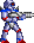

The vulnerability surge — and how much of it is AI
Every published CVE, what attackers exploit, and where it comes from — AI & MCP, open-source projects, plugins, edge devices, platforms, enterprise software.
loading…
Tier 1 Executive summary
CVEs per year, by origin
Published CVEs per calendar year, stacked by origin.
Where exploitation happens
CISA KEV additions this year, by origin.
Tier 2 Where the risk is
Exploitation by origin (CISA KEV)
Vulnerabilities added to CISA's Known Exploited Vulnerabilities catalog per year, by origin (2022+; the catalog launched in Nov 2021 with a backlog).
Exploited at disclosure (zero-day proxy)
KEV entries added at most one day after the CVE was published, by publication year.
Recent zero-days
Latest vulnerabilities exploited at or before disclosure.
| CVE | Product | Origin | Date (UTC) |
|---|
AI & MCP deep dive
Exploited AI products
AI products with CVEs in CISA's Known Exploited Vulnerabilities catalog.
What to do
Exploited AI software (CISA KEV)
AI-software CVEs in CISA's Known Exploited Vulnerabilities catalog — confirmed in-the-wild exploitation. KEV is a lower bound: most exploitation is never catalogued.
| CVE | Product | Layer | Published (UTC) | Added to KEV (UTC) | Days to KEV (days) | EPSS (30-day prob.) |
|---|
AI CVEs by stack layer, per month (2018+)
Each AI-related CVE is assigned to one layer of the AI stack (first matching rule wins — see methodology). Click a legend entry to hide a layer; the stack re-flows.
Note: 2021–22 is dominated by TensorFlow (framework layer) — one project's bulk disclosure of hundreds of fuzzing-found crash bugs, not a sudden rise in exploitable AI software. Hide the framework layer to see the rest of the stack.
Patch first — AI CVEs most likely to be exploited
Top 20 AI-related CVEs by FIRST EPSS score (estimated probability of exploitation activity in the next 30 days).
| CVE | Product | Layer | Severity (CVSS) | EPSS (30-day prob.) |
|---|
Supply chain: open-source projects & packages
Open-source CVEs per year
CVEs whose affected product is an open-source package (npm, PyPI, Maven, Go, crates.io, …).
Malicious packages per year
Malicious open-source packages reported to OSV (MAL-* advisories), by ecosystem. These are not CVEs.
Tier 3 Analyst detail
How AI software breaks — AI vs all CVEs
Weakness classes and severity of AI-related CVEs compared with all CVEs.
Severity distribution
Share of rated CVEs by CVSS severity, AI vs all.
Top weakness classes (CWE)
Share of CVEs carrying each CWE.
AI CVE severity mix per month (2018+)
Severity of AI-related CVEs over time.
AI-related vs all CVEs
Published CVE records from the official CVE list. Default range starts in 2018: earlier "AI" matches are mostly false positives (package names matching unrelated products).
Latest AI-related CVEs
Last 30 AI-matched published records, newest first. KEV = also in CISA's Known Exploited catalog. Severity badge = record CVSS (hover for version and source).
| CVE | Published (UTC) | Layer / product | CNA | Description |
|---|
Who reports AI CVEs
AI-related CVEs per year by assigning CNA (top assigners, rest grouped as "other"). Why it matters: counts depend on who files them — when a new CNA such as VulnCheck or huntr starts bulk-assigning AI CVEs, the curve rises without any change in the software itself.
Context
AI package advisories (OSV)
Security advisories for AI/ML packages per month, via OSV.dev.
Adoption context: npm AI SDK downloads (log scale)
Monthly npm downloads of AI SDK/framework packages (log scale). Adoption context only — downloads are not attack surface and are not used in any count above.
Method How this is measured
Methodology
Origins
Every published CVE gets exactly one origin; the first matching rule wins. Rules are checked in this order, except that CMS plugins are checked before open-source packages, so a WordPress plugin with a package URL counts as a plugin:
Zero-day proxy
"Exploited at disclosure" = a CISA KEV entry added at most one day after its CVE was published. It undercounts true zero-days (exploitation CISA confirms later is missed) and is bucketed by CVE publication year; KEV additions are bucketed by date added.
What counts as AI software
A CVE is "AI-related" when its description, affected vendor/product or package identifiers match AI-software rules. Each one is placed in the first matching layer:
How accurate is the matching
Severity
One CVSS family per CVE, from the CVE record: the CNA's CVSS v3.1, else CNA v4.0, else CNA v3.0, else CISA-ADP (Vulnrichment) v3.1; only if the record has none, NVD's score (v3.1 → v4.0 → v3.0, never v2). The source and version are kept per CVE (hover the severity badges).
Caveats
- The AI flag is a keyword / product heuristic: expect misses and false matches (see the measured precision and recall).
- NVD enrichment lags weeks to months behind publication; record-based severity avoids most of that lag, but some new CVEs are still unrated.
- Counts reflect the CNA mix — new or very active assigners (VulnCheck, huntr, GitHub) change the curve independently of the underlying software.
- CISA KEV is a lower bound of exploitation: it lists only exploitation CISA has confirmed and judged actionable, and it favours products US agencies run (Microsoft, Cisco, Fortinet…).
- Origins are rules over vendor, product and package identifiers. "Enterprise & other software" is the largest bucket (about two in five CVEs this year and the largest KEV origin): mostly enterprise products such as Oracle, Adobe, IBM, SAP, Atlassian, SolarWinds and Apache, plus many small PHP web apps.
- "Open-source projects & packages" includes every GitHub-assigned (GitHub_M) record. GitHub's CNA issued far more CVEs in 2026 than in 2025, so part of that origin's growth is a reporting change, not only more vulnerable code.
- EPSS is a model estimate, not an observation; it is shown to prioritise, not to prove exploitation.